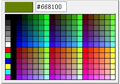

这是一个小巧简单实用的jquery颜色拾取器插件。
效果图如下：

更新列表：
2.5.1 更新-2012.8.21：
清除颜色功能用户体验优化，回调函数返回的color值为"",单击清除按钮后隐藏颜色选择器。
2.5 更新-2012.8.19：
增加清除颜色按钮，回调函数返回的color值为null。
2.4 更新-2012.7.22：
部分代码结构重构，提升性能，完善帮助文档。
2.3 更新：
在L引擎下颜色选择框边界缺失的问题。
2.2 更新：
bigcolorpicker在单击颜色选择器区域以外的位置时会隐藏，实现的方法是在document上先unbind mousedown事件，再注册mousedown事件，如果和其他插件一起共存时会把其他插件注册的mousedown清除，此版本修复这个问题。
2.1 更新：
解决IE6、IE7、chrome浏览器兼容问题，目前兼容的浏览器为IE6、IE7、IE8、firefox、chrome。
2.0 更新：
1、增加可以自定义颜色区域的大小功能(使用方法请看demo)，参数增加一个sideLength。
$("xxxxx").bigColorpicker(callback,engine,sideLength);
改变颜色区域大小的基数，在[2~10]之间（可选默认是6，只有engine为L时生效）
2、在使用鼠标定位实现时增加背景颜色图片预加载功能。
| 问题反馈： | |
| 邮箱：liu400liu#163.com(将"#"换成"@") 博客留言：iteye博客 |